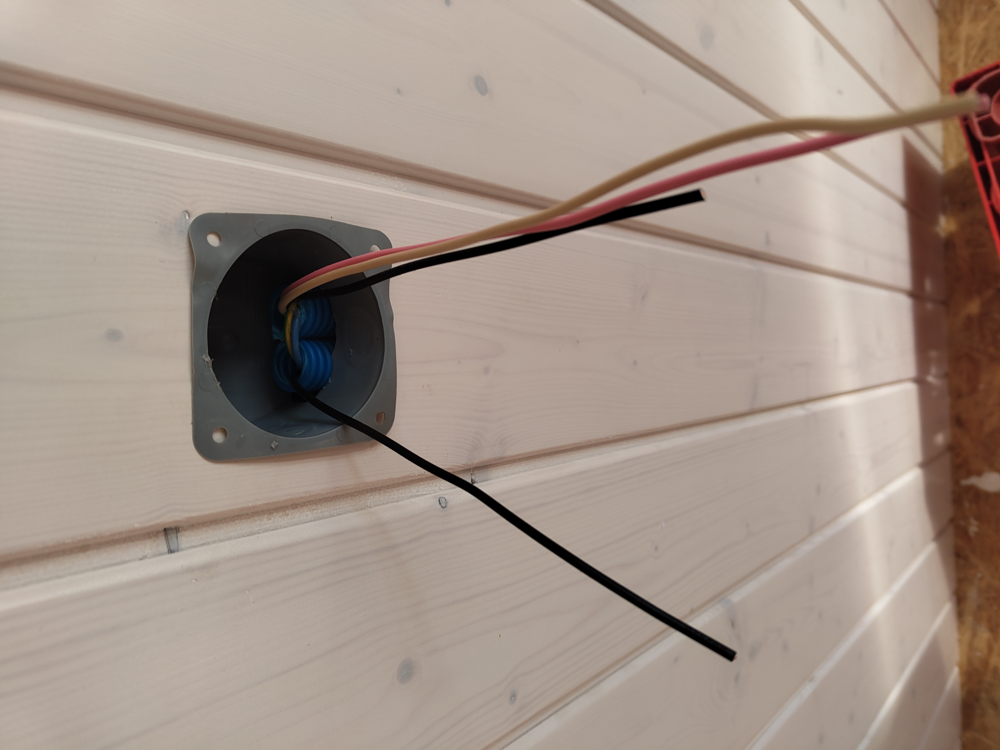
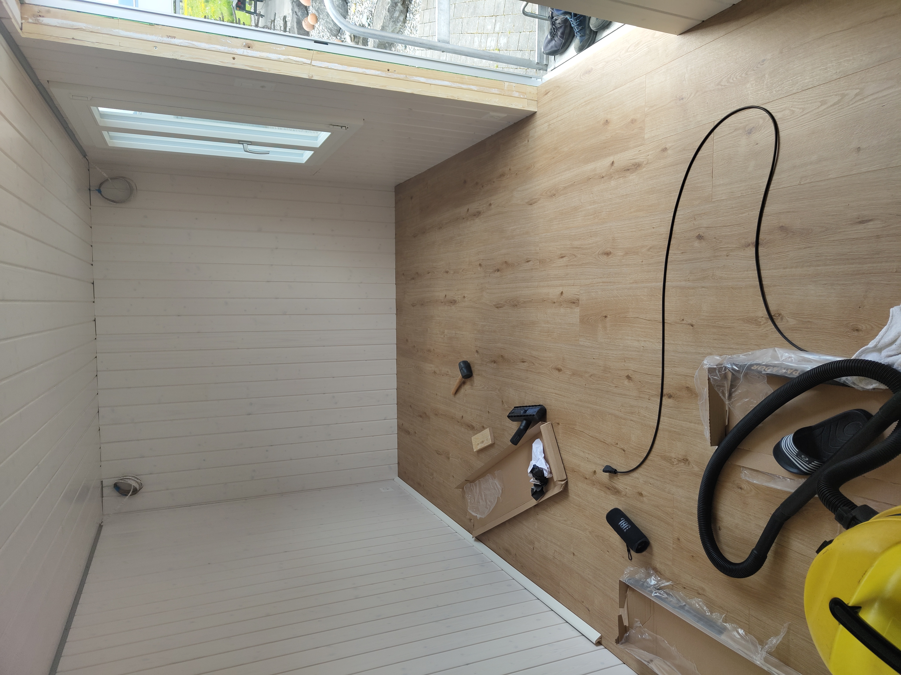
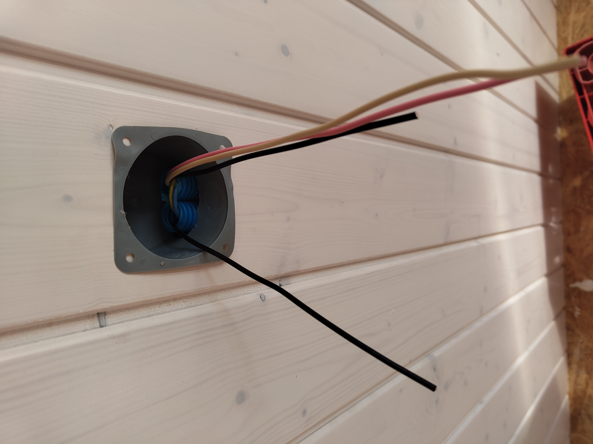
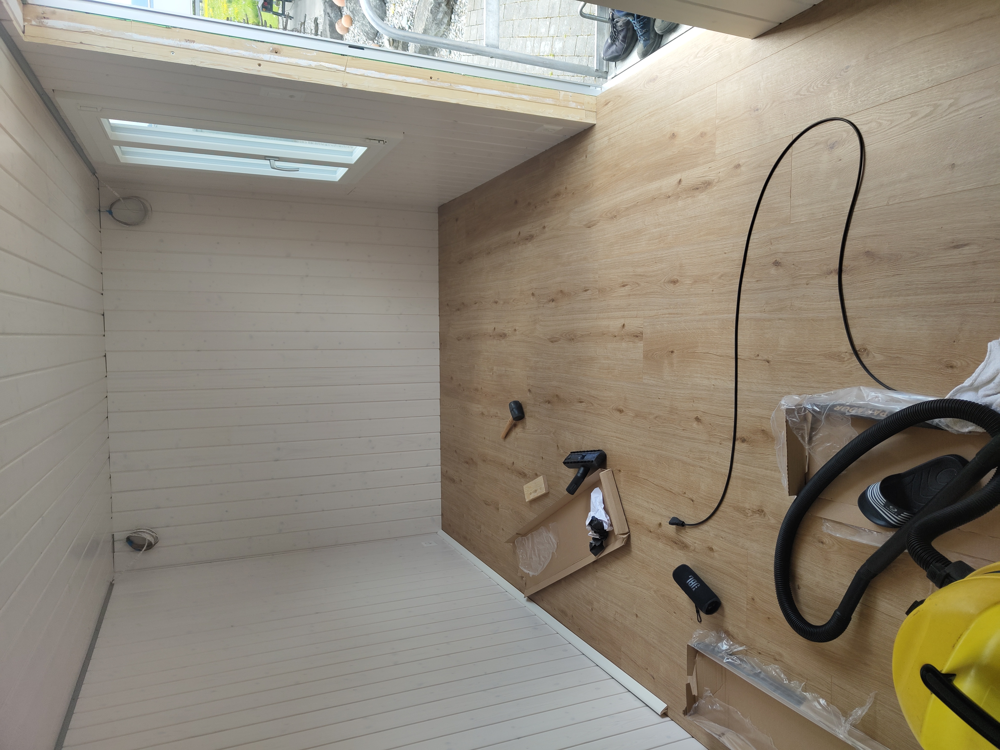

Bauwagen
Als Abschlussprojekt in der Oberstufe habe ich mein eigenes Zimmer aus einem Bauwagen gebaut. Den Bauwagen haben wir gekauft und in Bern abgeholt. Nun ging es an den Innenausbau, den ich grösstenteils selber gemacht habe, aber bei einigen Punkten, wie zum Beispiel dem Einbau der Fenster oder der Tür, brauchte ich Hilfe. Meine Familie hat mir sehr geholfen und für einige Bereiche, wie z.B. die Elektrik, konnte ich auf Fachleute zurückgreifen. Nebenbei habe ich Fotos gemacht, wie es während des Prozesses aussah. Heute lebe ich Vollzeit in meinem kleinen Haus und geniesse jede Minute. Es ist ein tolles Gefühl, in einem Raum zu leben, den ich selbst geschaffen habe. Die Unabhängigkeit und die Gemütlichkeit machen den Bauwagen zu einem ganz besonderen Zuhause. Jeden Tag werde ich daran erinnert, was ich aus eigener Kraft erreicht habe und bin stolz auf das Geschaffene.


 


